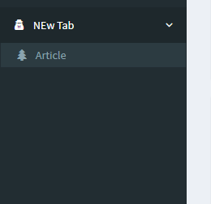

Lara Crud Admin-Panel
The package is aimed at the fastest deployment and flexible configuration of the admin panel. It has a lot of methods with which you can set it up as you like.

The package includes many methods that will allow you to adapt the admin panel to your needs.
A place to include any other types of information that you’d like to include about yourself.
$composer require trafik8787/lara-crud --dev
php artisan lara:example
'providers' => [
...
App\Providers\LaraCrudProvider::class,
],
php artisan lara:node ExampleNode
The command creates two classes in the class ExampleNode and ExampleNodeModel. Add them to the array in the provider App\Providers\LaraCrudProvider:
protected $nodes = [
...
'App\Http\Node\Model\ExampleNodeModel' => 'App\Http\Node\ExampleNode',
];
ou can go to http://you_domain/admin/example_node_model
Example of an array of navigation in the file Add service provider App\Providers\LaraCrudProvider::class
Inside the tabs array, there are tabs

Tab name
Tab Settings
Sorting order
Class Icons http://fontawesome.io/icons/
Example:
protected $navigation = [
'App\Http\Node\ExampleNode' => [
'priory' => 1,
'title' => 'Example',
'icon' => 'fa-user-secret'
],
'tabs' => [
'tab_name' => [
'settings' => [
'icon' => 'fa-user-secret',
'priory' => 2,
],
'node' => [
'App\Http\Node\Articles' => [
'priory' => 2,
'title' => 'Articles',
'icon' => 'fa-tree'
]
]
],
'tab_name2' => [
...
]
],
'App\Http\Node\Users' => [
'priory' => 3,
'title' => 'Users',
'icon' => 'fa-tree'
],
];